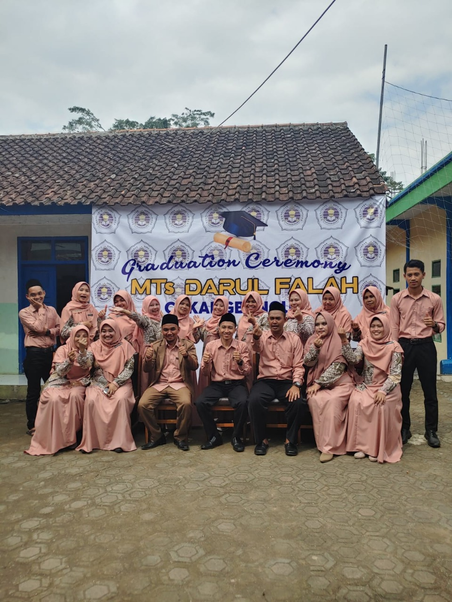

Paskibra
Paskibra MTs Darul Falah membentuk kedisiplinan, kepemimpinan, dan rasa cinta tanah air melalui latihan baris-berbaris dan upacara.
Paskibra MTs Darul Falah membentuk kedisiplinan, kepemimpinan, dan rasa cinta tanah air melalui latihan baris-berbaris dan upacara.